Chapter 11 (Big) Data Visualization
Visualizing certain characteristics and patterns in large datasets is primarily challenging for two reasons. First, depending on the type of plot, plotting raw data consisting of many observations can take a long time (and lead to large figure files). Second, patterns might be harder to recognize due to the sheer amount of data displayed in a plot. Both of these challenges are particularly related to the visualization of raw data for explorative or descriptive purposes. Visualizations of already-computed aggregations or estimates is typically very similar whether working with large or small datasets.
The following sections thus particularly highlight the issue of generating plots based on the raw data, including many observations, and with the aim of exploring the data in order to discover patterns in the data that then can be further investigated in more sophisticated statistical analyses. We will do so in three steps. First, we will look into a few important conceptual aspects where generating plots with a large number of observations becomes difficult, and then look at potentially helpful tools to address these difficulties. Based on these insights, the next section presents a data exploration tutorial based on the already familiar TLC taxi trips dataset, looking into different approaches to visualize relations between variables. Finally, the last section of this chapter covers an area of data visualization that has become more and more relevant in applied economic research with the availability of highly detailed observational data on economic and social activities (due to the digitization of many aspects of modern life): the plotting of geo-spatial information on economic activity.
All illustrations of concepts and visualization examples in this chapter build on the Grammar of Graphics (Wilkinson et al. 2005) concept implemented in the ggplot2 package (Wickham 2016). The choice of this plotting package/framework is motivated by the large variety of plot-types covered in ggplot2 (ranging from simple scatterplots to hexbin-plots and geographic maps), as well as the flexibility to build and modify plots step by step (an aspect that is particularly interesting when exploring large datasets visually).
11.1 Challenges of Big Data visualization
Generating a plot in an interactive R session means generating a new object in the R environment (RAM), which can (in the case of large datasets) take up a considerable amount of memory. Moreover, depending on how the plot function is called, RStudio will directly render the plot in the Plots tab (which again needs memory and processing). Consider the following simple example, in which we plot two vectors of random numbers against each other.61
# load package
library(ggplot2) # for plotting
library(pryr) # for profiling
library(bench) # for profiling
library(fs) # for profiling
# random numbers generation
x <- rnorm(10^6, mean=5)
y <- 1 + 1.4*x + rnorm(10^6)
plotdata <- data.frame(x=x, y=y)
object_size(plotdata)## 16.00 MB# generate scatter plot
splot <-
ggplot(plotdata, aes(x=x, y=y))+
geom_point()
object_size(splot)## 16.84 MBThe plot object, not surprisingly, takes up an additional slice of RAM of the size of the original dataset, plus some overhead. Now when we instruct ggplot to generate/plot the visualization on canvas, even more memory is needed. Moreover, rather a lot of data processing is needed to place one million points on the canvas (also, note that one million observations would not be considered a lot in the context of this book…).
mem_used()## 2.26 GBsystem.time(print(splot))## user system elapsed
## 12.702 0.092 12.791mem_used()## 2.36 GBFirst, to generate this one plot, an average modern laptop needs about 13.6 seconds. This would not be very comfortable in an interactive session to explore the data visually. Second, and even more striking, before the plot was generated, mem_used() indicated the total amount of memory (in MBs) used by R was around 160MB, while right after plotting to the canvas, R had used around 270MB. Note that this is larger than the dataset and the ggplot-object by an order of magnitude. Creating the same plot based on 100 million observations would likely crash or freeze your R session. Finally, when we output the plot to a file (for example, a pdf), the generated vector-based graphic file is also rather large.
ggsave("splot.pdf", device="pdf", width = 5, height = 5)
file_size("splot.pdf")## 54.8MHence generating plots visualizing large amounts of raw data tends to use up a lot of computing time, memory, and (ultimately) storage space for the generated plot file. There are a couple of solutions to address these performance issues.
Avoid fancy symbols (costly rendering)
It turns out that one aspect of the problem is the particular symbols/characters used in ggplot (and other plot functions in R) for the points in such a scatter-plot. Thus, one solution is to override the default set of characters directly when calling ggplot(). A reasonable choice of character for this purpose is simply the full point (.).
# generate scatter plot
splot2 <-
ggplot(plotdata, aes(x=x, y=y))+
geom_point(pch=".")mem_used()## 2.26 GBsystem.time(print(splot2))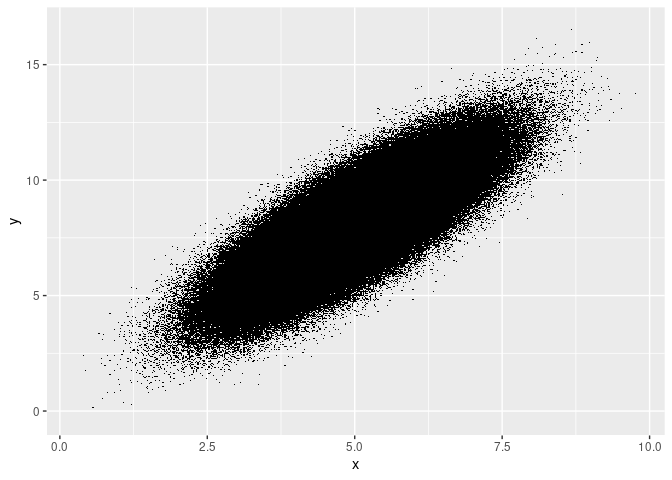
## user system elapsed
## 1.771 0.010 1.786mem_used()## 2.37 GBThe increase in memory due to the plot call is comparatively smaller, and plotting is substantially faster.
Use rasterization (bitmap graphics) instead of vector graphics
By default, most data visualization libraries, including ggplot2, are implemented to generate vector-based graphics. Conceptually, this makes a lot of sense for any type of plot when the number of observations plotted is small or moderate. In simple terms, vector-based graphics define lines and shapes as vectors in a coordinate system. In the case of a scatter-plot, the x and y coordinates of every point need to be recorded. In contrast, bitmap files contain image information in the form of a matrix (or several matrices if colors are involved), whereby each cell of the matrix represents a pixel and contains information about the pixel’s color. While a vector-based representation of plot of few observations is likely more memory-efficient than a high-resolution bitmap representation of the same plot, it might well be the other way around when we are plotting millions of observations.
Thus, an alternative solution to save time and memory is to directly use a bitmap format instead of a vector-based format. This could be done by plotting directly to a bitmap-format file and then opening the file to look at the plot. However, this is somewhat clumsy as part of a data visualization workflow to explore the data. Luckily there is a ready-made solution by Kratochvíl et al. (2020) that builds on the idea of rasterizing scatter-plots, but that then displays the bitmap image directly in R. The approach is implemented in the scattermore package (Kratochvil 2022) and can straightforwardly be used in combination with ggplot.
# install.packages("scattermore")
library(scattermore)
# generate scatter plot
splot3 <-
ggplot()+
geom_scattermore(aes(x=x, y=y), data=plotdata)
# show plot in interactive session
system.time(print(splot3))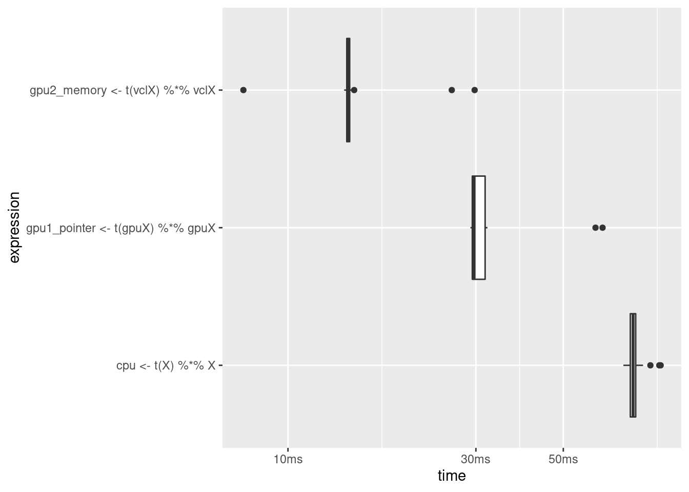
## user system elapsed
## 0.714 0.007 0.729# plot to file
ggsave("splot3.pdf", device="pdf", width = 5, height = 5)
file_size("splot3.pdf")## 13.2KThis approach is faster by an order of magnitude, and the resulting pdf takes up only a fraction of the storage space needed for splot.pdf, which is based on the classical geom_points() and a vector-based image.
Use aggregates instead of raw data
Depending on what pattern/aspect of the data you want to inspect visually, you might not actually need to plot all observations directly but rather the result of aggregating the observations first. There are several options to do this, but in the context of scatter plots based on many observations, a two-dimensional bin plot can be a good starting point. The idea behind this approach is to divide the canvas into grid-cells (typically in the form of rectangles or hexagons), compute for each grid cell the number of observations/points that would fall into it (in a scatter plot), and then indicate the number of observations per grid cell via the cell’s shading. Such a 2D bin plot of the same data as above can be generated via geom_hex():
# generate scatter plot
splot4 <-
ggplot(plotdata, aes(x=x, y=y))+
geom_hex()mem_used()## 2.26 GBsystem.time(print(splot4))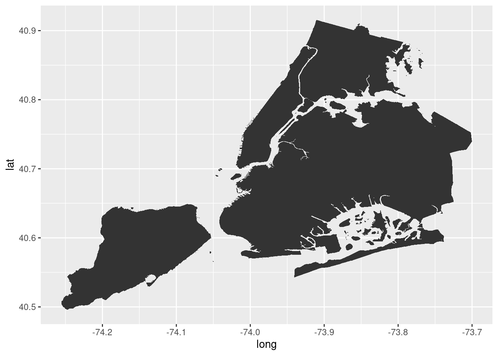
## user system elapsed
## 0.448 0.008 0.470mem_used()## 2.26 GBObviously, this approach is much faster and uses up much less memory than the geom_point() approach. Moreover, note that this approach to visualizing a potential relation between two variables based on many observations might even have another advantage over the approaches taken above. In all of the scatter plots, it was not visible whether the point cloud contains areas with substantially more observations (more density). There were simply too many points plotted over each other to recognize much more than the contour of the overall point cloud. With the 2D bin plot implemented with geom_hex(), we recognize immediately that there are many more observations located in the center of the cloud than further away from the center.
11.2 Data exploration with ggplot2
In this tutorial we will work with the TLC data used in the data aggregation session. The raw data consists of several monthly CSV files and can be downloaded via the TLC’s website. Again, we work only with the first million observations.
In order to better understand the large dataset at hand (particularly regarding the determinants of tips paid), we use ggplot2 to visualize some key aspects of the data.
First, let’s look at the raw relationship between fare paid and the tip paid. We set up the canvas with ggplot.
# load packages
library(ggplot2)
# set up the canvas
taxiplot <- ggplot(taxi, aes(y=Tip_Amt, x= Fare_Amt))
taxiplotNow we visualize the co-distribution of the two variables with a simple scatter-plot. to speed things up, we use geom_scattermore() but increase the point size.62
# simple x/y plot
taxiplot + geom_scattermore(pointsize = 3)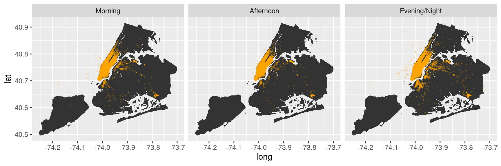
Note that this took quite a while, as R had to literally plot one million dots on the canvas. Moreover, many dots fall within the same area, making it impossible to recognize how much mass there actually is. This is typical for visualization exercises with large datasets. One way to improve this is by making the dots more transparent by setting the alpha parameter.
# simple x/y plot
taxiplot + geom_scattermore(pointsize = 3, alpha=0.2)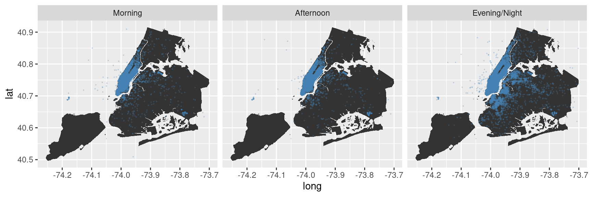
Alternatively, we can compute two-dimensional bins. Here, we use geom_bin2d() (an alternative to geom_hex used above) in which the canvas is split into rectangles and the number of observations falling into each respective rectangle is computed. The visualization is then based on plotting the rectangles with counts greater than 0, and the shading of the rectangles indicates the count values.
# two-dimensional bins
taxiplot + geom_bin2d()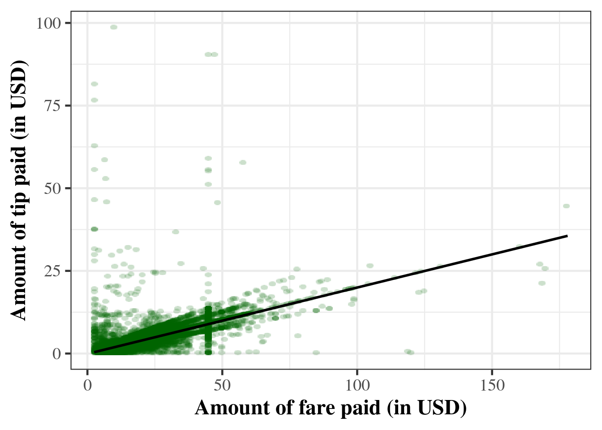
A large proportion of the tip/fare observations seem to be in the very lower-left corner of the pane, while most other trips seem to be evenly distributed. However, we fail to see smaller differences in this visualization. In order to reduce the dominance of the 2D bins with very high counts, we display the natural logarithm of counts and display the bins as points.
# two-dimensional bins
taxiplot +
stat_bin_2d(geom="point",
mapping= aes(size = log(after_stat(count)))) +
guides(fill = "none")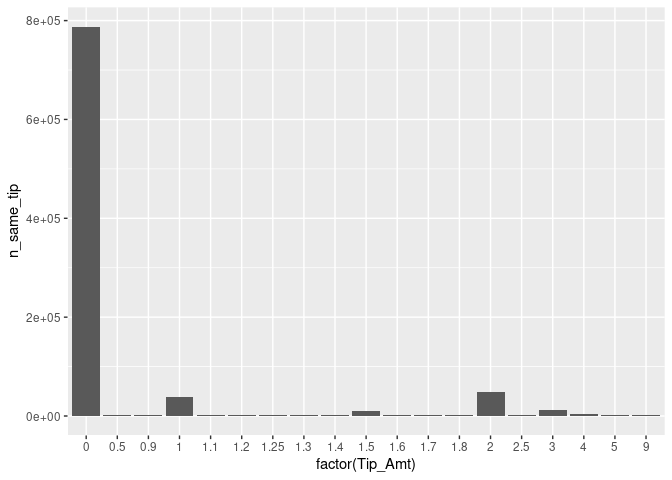
We note that there are many cases with very low fare amounts, many cases with no or hardly any tip, and quite a lot of cases with very high tip amounts (in relation to the rather low fare amount). In the following, we dissect this picture by having a closer look at ‘typical’ tip amounts and whether they differ by type of payment.
# compute frequency of per tip amount and payment method
taxi[, n_same_tip:= .N, by= c("Tip_Amt", "Payment_Type")]
frequencies <- unique(taxi[Payment_Type %in% c("credit", "cash"),
c("n_same_tip",
"Tip_Amt",
"Payment_Type")][order(n_same_tip,
decreasing = TRUE)])
# plot top 20 frequent tip amounts
fare <- ggplot(data = frequencies[1:20], aes(x = factor(Tip_Amt),
y = n_same_tip))
fare + geom_bar(stat = "identity") 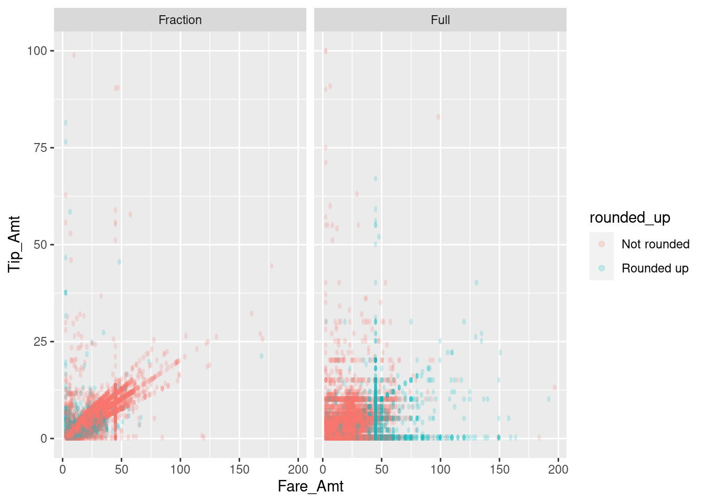
Indeed, paying no tip at all is quite frequent, overall.63 The bar plot also indicates that there seem to be some ‘focal points’ in the amount of tip paid. Clearly, paying one USD or two USD is more common than paying fractions. However, fractions of dollars might be more likely if tips are paid in cash and customers simply add some loose change to the fare amount paid.
fare + geom_bar(stat = "identity") +
facet_wrap("Payment_Type") 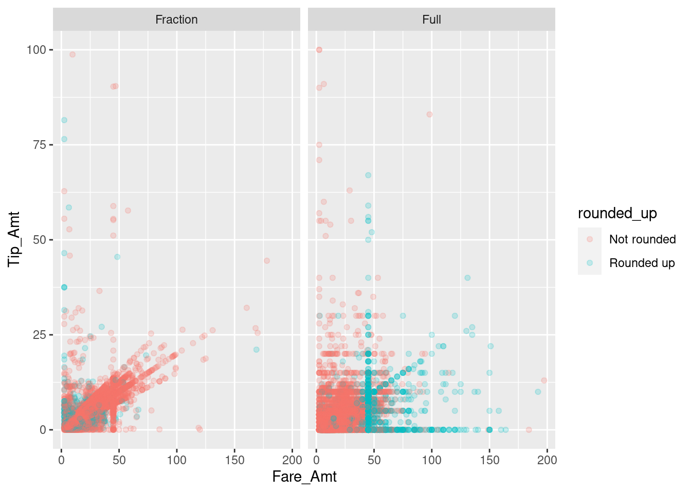
Clearly, it looks as if trips paid in cash tend not to be tipped (at least in this sub-sample).
Let’s try to tease this information out of the initial points plot. Trips paid in cash are often not tipped; we thus should indicate the payment method. Moreover, tips paid in full dollar amounts might indicate a habit.
# indicate natural numbers
taxi[, dollar_paid := ifelse(Tip_Amt == round(Tip_Amt,0), "Full", "Fraction"),]
# extended x/y plot
taxiplot +
geom_scattermore(pointsize = 3, alpha=0.2, aes(color=Payment_Type)) +
facet_wrap("dollar_paid") +
theme(legend.position="bottom")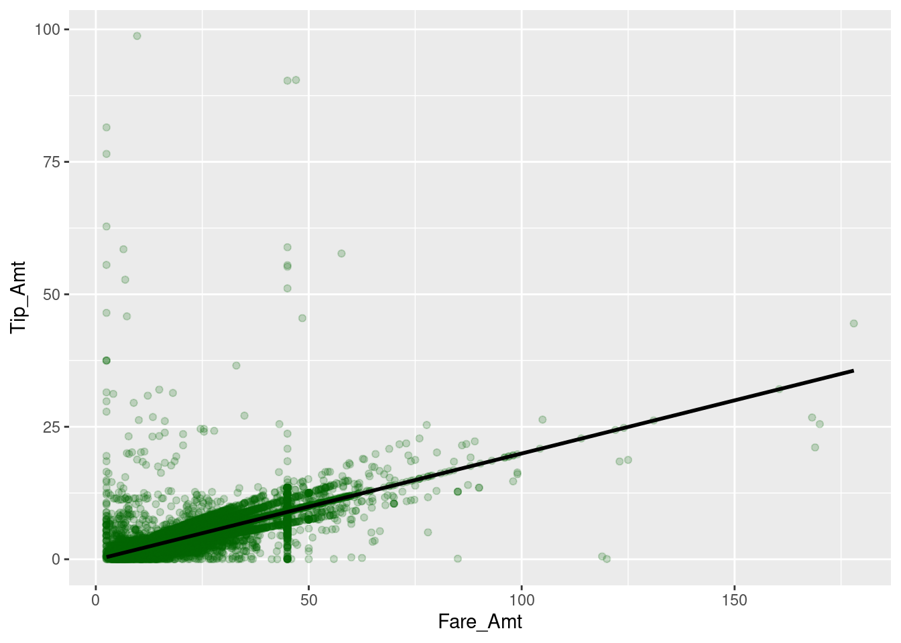
Now the picture is getting clearer. Paying a tip seems to follow certain rules of thumb. Certain fixed amounts tend to be paid independent of the fare amount (visible in the straight lines of dots on the right-hand panel). At the same time, the pattern in the left panel indicates another habit: computing the amount of the tip as a linear function of the total fare amount (‘pay 10% tip’). A third habit might be to determine the amount of tip by ‘rounding up’ the total amount paid. In the following, we try to tease the latter out, only focusing on credit card payments.
taxi[, rounded_up := ifelse(Fare_Amt + Tip_Amt == round(Fare_Amt + Tip_Amt, 0),
"Rounded up",
"Not rounded")]
# extended x/y plot
taxiplot +
geom_scattermore(data= taxi[Payment_Type == "credit"],
pointsize = 3, alpha=0.2, aes(color=rounded_up)) +
facet_wrap("dollar_paid") +
theme(legend.position="bottom")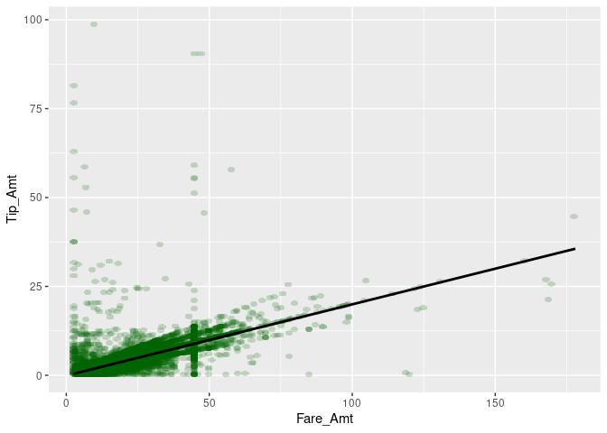
Now we can start modeling. A reasonable first shot is to model the tip amount as a linear function of the fare amount, conditional on no-zero tip amounts paid as fractions of a dollar.
modelplot <- ggplot(data= taxi[Payment_Type == "credit" &
dollar_paid == "Fraction" &
0 < Tip_Amt],
aes(x = Fare_Amt, y = Tip_Amt))
modelplot +
geom_scattermore(pointsize = 3, alpha=0.2, color="darkgreen") +
geom_smooth(method = "lm", colour = "black") +
theme(legend.position="bottom")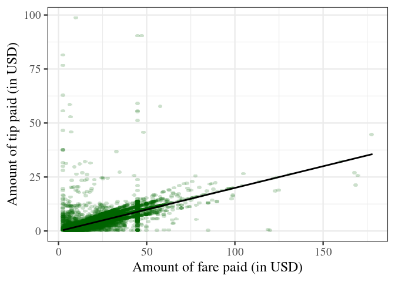
Finally, we prepare the plot for reporting. ggplot2 provides several predefined ‘themes’ for plots that define all kinds of aspects of a plot (background color, line colors, font size, etc.). The easiest way to tweak the design of your final plot in a certain direction is to just add such a pre-defined theme at the end of your plot. Some of the pre-defined themes allow you to change a few aspects, such as the font type and the base size of all the texts in the plot (labels, tick numbers, etc.). Here, we use the theme_bw(), increase the font size, and switch to a serif-type font. theme_bw() is one of the complete themes that ships with the basic ggplot2 installation.64 Many more themes can be found in additional R packages (see, for example, the ggthemes package).
modelplot <- ggplot(data= taxi[Payment_Type == "credit"
& dollar_paid == "Fraction"
& 0 < Tip_Amt],
aes(x = Fare_Amt, y = Tip_Amt))
modelplot +
geom_scattermore(pointsize = 3, alpha=0.2, color="darkgreen") +
geom_smooth(method = "lm", colour = "black") +
ylab("Amount of tip paid (in USD)") +
xlab("Amount of fare paid (in USD)") +
theme_bw(base_size = 18, base_family = "serif")Aside: modify and create themes
Simple modifications of themes
Apart from using pre-defined themes as illustrated above, we can use the theme() function to further modify the design of a plot. For example, we can print the axis labels (‘axis titles’) in bold.
modelplot <- ggplot(data= taxi[Payment_Type == "credit"
& dollar_paid == "Fraction"
& 0 < Tip_Amt],
aes(x = Fare_Amt, y = Tip_Amt))
modelplot +
geom_scattermore(pointsize = 3, alpha=0.2, color="darkgreen") +
geom_smooth(method = "lm", colour = "black") +
ylab("Amount of tip paid (in USD)") +
xlab("Amount of fare paid (in USD)") +
theme_bw(base_size = 18, base_family = "serif") +
theme(axis.title = element_text(face="bold"))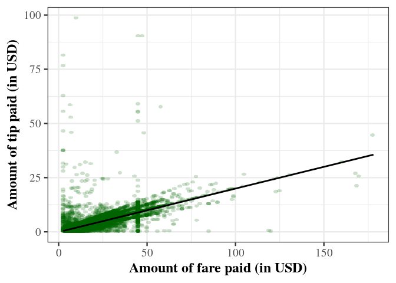
There is a large list of plot design aspects that can be modified in this way (see ?theme() for details).
Create your own themes
Extensive design modifications via theme() can involve many lines of code, making your plot code harder to read/understand. In practice, you might want to define your specific theme once and then apply this theme to all of your plots. In order to do so it makes sense to choose one of the existing themes as a basis and then modify its design aspects until you have the design you are looking for. Following the design choices in the examples above, we can create our own theme_my_serif() as follows.
# 'define' a new theme
theme_my_serif <-
theme_bw(base_size = 18, base_family = "serif") +
theme(axis.title = element_text(face="bold"))
# apply it
modelplot +
geom_scattermore(pointsize = 3, alpha=0.2, color="darkgreen") +
geom_smooth(method = "lm", colour = "black") +
ylab("Amount of tip paid (in USD)") +
xlab("Amount of fare paid (in USD)") +
theme_my_serif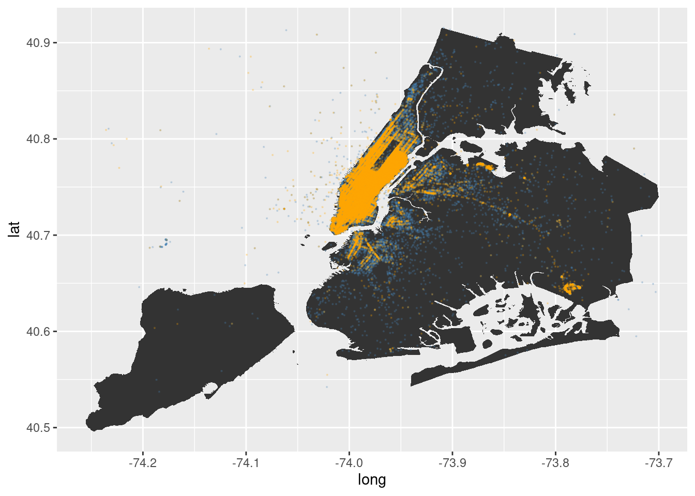
This practical approach does not require you to define every aspect of a theme. If you indeed want to completely define every aspect of a theme, you can set complete=TRUE when calling the theme function.
# 'define' a new theme
my_serif_theme <-
theme_bw(base_size = 18, base_family = "serif") +
theme(axis.title = element_text(face="bold"), complete = TRUE)
# apply it
modelplot +
geom_scattermore(pointsize = 3, alpha=0.2, color="darkgreen") +
geom_smooth(method = "lm", colour = "black") +
ylab("Amount of tip paid (in USD)") +
xlab("Amount of fare paid (in USD)") +
theme_my_serif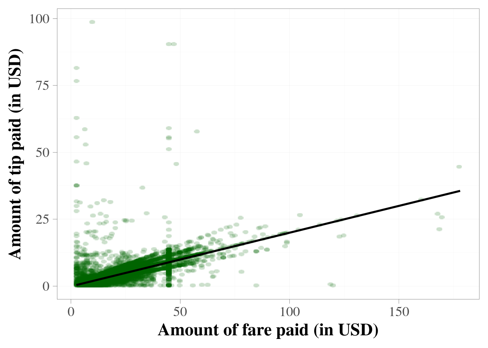
Note that since we have only defined one aspect (bold axis titles), the rest of the elements follow the default theme.
Implementing actual themes as functions
Importantly, the approach outlined above does not technically really create a new theme like theme_bw(), as these pre-defined themes are implemented as functions. Note that we add the new theme to the plot simply with + theme_my_serif (no parentheses). In practice this is the simplest approach, and it provides all the functionality you need in order to apply your own ‘theme’ to each of your plots. If you want to implement a theme as a function, the following blueprint can get you started.
# define own theme
theme_my_serif <-
function(base_size = 15,
base_family = "",
base_line_size = base_size/170,
base_rect_size = base_size/170){
# use theme_bw() as a basis but replace some design elements
theme_bw(base_size = base_size,
base_family = base_family,
base_line_size = base_size/170,
base_rect_size = base_size/170) %+replace%
theme(
axis.title = element_text(face="bold")
)
}
# apply the theme
modelplot +
geom_scattermore(pointsize = 3, alpha=0.2, color="darkgreen") +
geom_smooth(method = "lm", colour = "black") +
ylab("Amount of tip paid (in USD)") +
xlab("Amount of fare paid (in USD)") +
theme_my_serif(base_size = 18, base_family="serif")11.3 Visualizing time and space
The previous visualization exercises were focused on visually exploring patterns in the tipping behavior of people taking a NYC yellow cab ride. Based on the same dataset, we will explore the time and spatial dimensions of the TLC Yellow Cab data. That is, we explore where trips tend to start and end, depending on the time of the day.
11.3.1 Preparations
For the visualization of spatial data, we first load additional packages that give R some GIS features.
# load GIS packages
library(rgdal)
library(rgeos)Moreover, we download and import a so-called ‘shape file’ (a geospatial data format) of New York City. This will be the basis for our visualization of the spatial dimension of taxi trips. The file is downloaded from New York’s Department of City Planning and indicates the city’s community district borders.65
# download the zipped shapefile to a temporary file; unzip
BASE_URL <-
"https://www1.nyc.gov/assets/planning/download/zip/data-maps/open-data/"
FILE <- "nycd_19a.zip"
URL <- paste0(BASE_URL, FILE)
tmp_file <- tempfile()
download.file(URL, tmp_file)
file_path <- unzip(tmp_file, exdir= "data")
# delete the temporary file
unlink(tmp_file)Now we can import the shape file and have a look at how the GIS data is structured.
# read GIS data
nyc_map <- readOGR(file_path[1], verbose = FALSE)
# have a look at the GIS data
summary(nyc_map)## Object of class SpatialPolygonsDataFrame
## Coordinates:
## min max
## x 913175 1067383
## y 120122 272844
## Is projected: TRUE
## proj4string :
## [+proj=lcc +lat_0=40.1666666666667 +lon_0=-74
## +lat_1=41.0333333333333 +lat_2=40.6666666666667
## +x_0=300000 +y_0=0 +datum=NAD83 +units=us-ft
## +no_defs]
## Data attributes:
## BoroCD Shape_Leng Shape_Area
## Min. :101 Min. : 23963 Min. :2.43e+07
## 1st Qu.:206 1st Qu.: 36611 1st Qu.:4.84e+07
## Median :308 Median : 52246 Median :8.27e+07
## Mean :297 Mean : 74890 Mean :1.19e+08
## 3rd Qu.:406 3rd Qu.: 85711 3rd Qu.:1.37e+08
## Max. :595 Max. :270660 Max. :5.99e+08Note that the coordinates are not in the usual longitude and latitude units. The original map uses a different projection than the TLC data of taxi trip records. Before plotting, we thus have to change the projection to be in line with the TLC data.
# transform the projection
p <- CRS("+proj=longlat +datum=WGS84 +no_defs +ellps=WGS84 +towgs84=0,0,0")
nyc_map <- spTransform(nyc_map, p)## Warning: PROJ support is provided by the sf and terra
## packages among others# check result
summary(nyc_map)## Object of class SpatialPolygonsDataFrame
## Coordinates:
## min max
## x -74.26 -73.70
## y 40.50 40.92
## Is projected: FALSE
## proj4string : [+proj=longlat +datum=WGS84 +no_defs]
## Data attributes:
## BoroCD Shape_Leng Shape_Area
## Min. :101 Min. : 23963 Min. :2.43e+07
## 1st Qu.:206 1st Qu.: 36611 1st Qu.:4.84e+07
## Median :308 Median : 52246 Median :8.27e+07
## Mean :297 Mean : 74890 Mean :1.19e+08
## 3rd Qu.:406 3rd Qu.: 85711 3rd Qu.:1.37e+08
## Max. :595 Max. :270660 Max. :5.99e+08One last preparatory step is to convert the map data to a data.frame for plotting with ggplot.
nyc_map <- fortify(nyc_map)11.3.2 Pick-up and drop-off locations
Since trips might actually start or end outside of NYC, we first restrict the sample of trips to those within the boundary box of the map. For the sake of the exercise, we only select a random sample of 50000 trips from the remaining trip records.
# taxi trips plot data
taxi_trips <- taxi[Start_Lon <= max(nyc_map$long) &
Start_Lon >= min(nyc_map$long) &
End_Lon <= max(nyc_map$long) &
End_Lon >= min(nyc_map$long) &
Start_Lat <= max(nyc_map$lat) &
Start_Lat >= min(nyc_map$lat) &
End_Lat <= max(nyc_map$lat) &
End_Lat >= min(nyc_map$lat)
]
taxi_trips <- taxi_trips[base::sample(1:nrow(taxi_trips), 50000)]In order to visualize how the cab traffic is changing over the course of the day, we add an additional variable called start_time in which we store the time (hour) of the day a trip started.
taxi_trips$start_time <- lubridate::hour(taxi_trips$Trip_Pickup_DateTime)Particularly, we want to look at differences between morning, afternoon, and evening/night.
# define new variable for facets
taxi_trips$time_of_day <- "Morning"
taxi_trips[start_time > 12 & start_time < 17]$time_of_day <- "Afternoon"
taxi_trips[start_time %in% c(17:24, 0:5)]$time_of_day <- "Evening/Night"
taxi_trips$time_of_day <-
factor(taxi_trips$time_of_day,
levels = c("Morning", "Afternoon", "Evening/Night"))We create the plot by first setting up the canvas with our taxi trip data. Then, we add the map as a first layer.
# set up the canvas
locations <- ggplot(taxi_trips, aes(x=long, y=lat))
# add the map geometry
locations <- locations + geom_map(data = nyc_map,
map = nyc_map,
aes(map_id = id))
locationsNow we can start adding the pick-up and drop-off locations of cab trips.
# add pick-up locations to plot
locations +
geom_scattermore(aes(x=Start_Lon, y=Start_Lat),
color="orange",
pointsize = 1,
alpha = 0.2)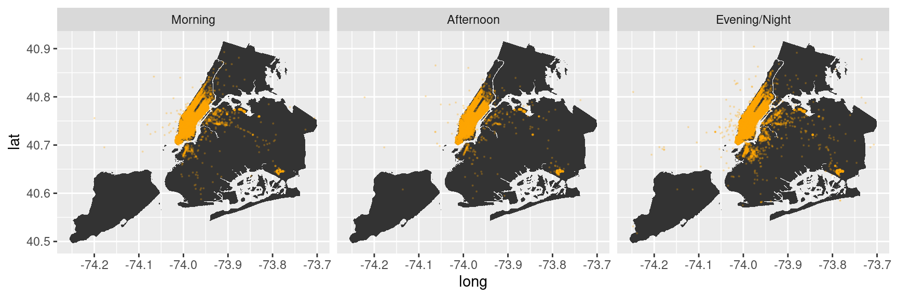
As is to be expected, most of the trips start in Manhattan. Now let’s look at where trips end.
# add drop-off locations to plot
locations +
geom_scattermore(aes(x=End_Lon, y=End_Lat),
color="steelblue",
pointsize = 1,
alpha = 0.2) +
geom_scattermore(aes(x=Start_Lon, y=Start_Lat),
color="orange",
pointsize = 1,
alpha = 0.2)In fact, more trips tend to end outside of Manhattan. And the destinations seem to be broader spread across the city then the pick-up locations. Most destinations are still in Manhattan, though.
Now let’s have a look at how this picture changes depending on the time of the day.
# pick-up locations
locations +
geom_scattermore(aes(x=Start_Lon, y=Start_Lat),
color="orange",
pointsize =1,
alpha = 0.2) +
facet_wrap(vars(time_of_day))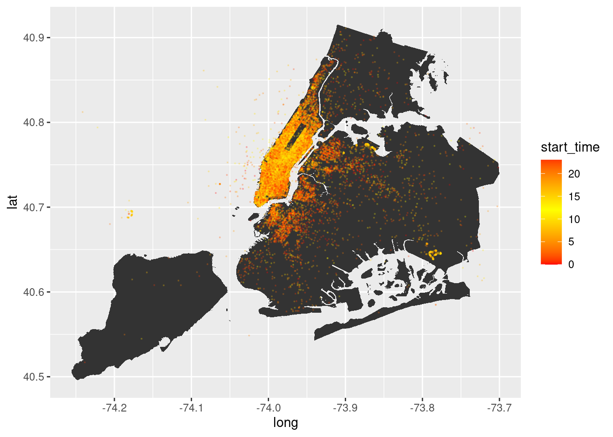
# drop-off locations
locations +
geom_scattermore(aes(x=End_Lon, y=End_Lat),
color="steelblue",
pointsize = 1,
alpha = 0.2) +
facet_wrap(vars(time_of_day))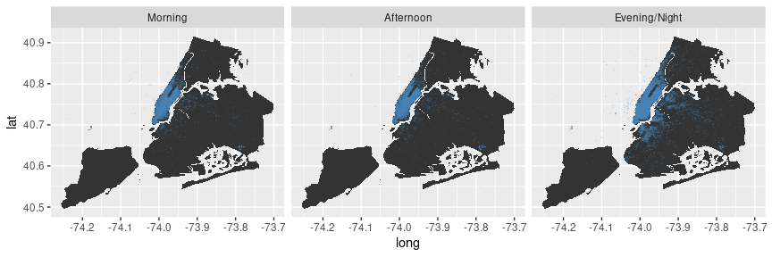
Alternatively, we can plot the hours on a continuous scale.
# drop-off locations
locations +
geom_scattermore(aes(x=End_Lon, y=End_Lat, color = start_time),
pointsize = 1,
alpha = 0.2) +
scale_colour_gradient2( low = "red", mid = "yellow", high = "red",
midpoint = 12)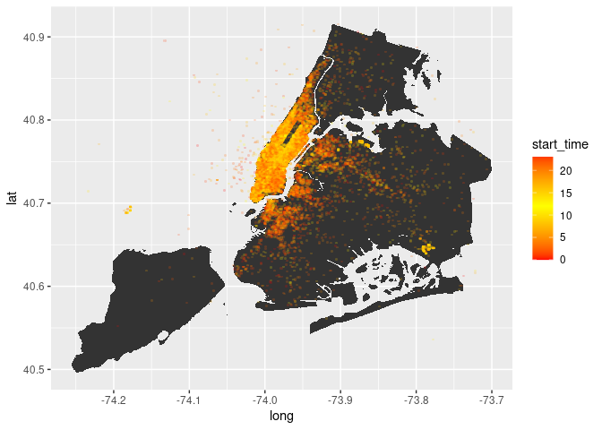
Aside: change color schemes
In the example above we use scale_colour_gradient2() to modify the color gradient used to visualize the start time of taxi trips. By default, ggplot would plot the following (default gradient color setting):
# drop-off locations
locations +
geom_scattermore(aes(x=End_Lon, y=End_Lat, color = start_time ),
pointsize = 1,
alpha = 0.2) 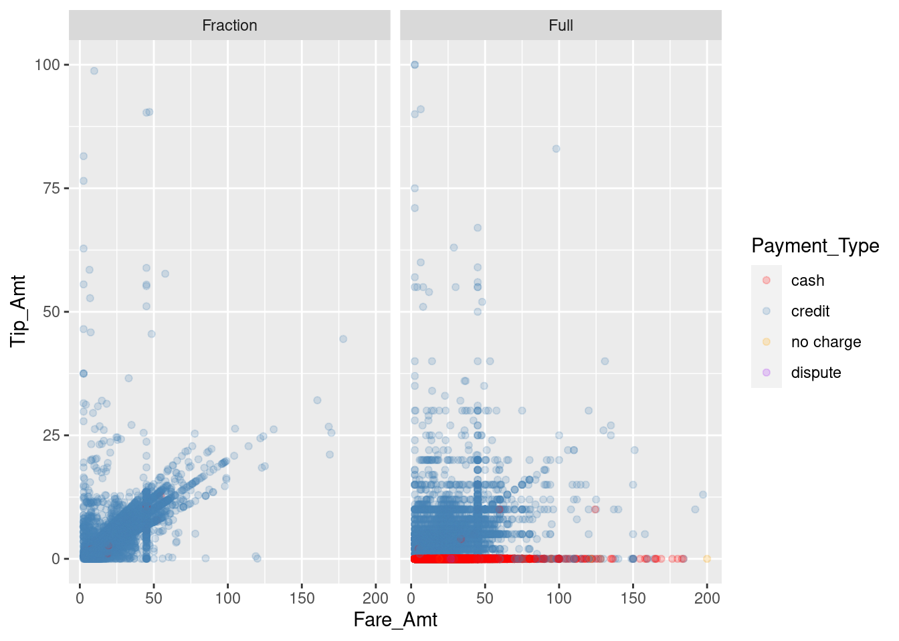
ggplot2 offers various functions to modify the color scales used in a plot. In the case of the example above, we visualize values of a continuous variable. Hence we use a gradient color scale. In the case of categorical variables, we need to modify the default discrete color scale.
Recall the plot illustrating tipping behavior, where we highlight in which observations the client paid with credit card, cash, etc.
# indicate natural numbers
taxi[, dollar_paid := ifelse(Tip_Amt == round(Tip_Amt,0),
"Full",
"Fraction"),]
# extended x/y plot
taxiplot +
geom_scattermore(alpha=0.2,
pointsize=3,
aes(color=Payment_Type)) +
facet_wrap("dollar_paid") +
theme(legend.position="bottom")
Since we do not further specify the discrete color scheme to be used, ggplot simply uses its default color scheme for this plot. We can change this as follows.
# indicate natural numbers
taxi[, dollar_paid := ifelse(Tip_Amt == round(Tip_Amt,0),
"Full",
"Fraction"),]
# extended x/y plot
taxiplot +
geom_scattermore(alpha=0.2, pointsize = 3,
aes(color=Payment_Type)) +
facet_wrap("dollar_paid") +
scale_color_discrete(type = c("red",
"steelblue",
"orange",
"purple")) +
theme(legend.position="bottom")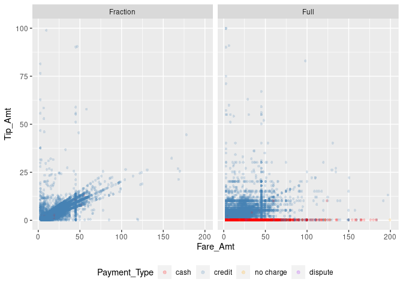
11.4 Wrapping up
ggplotoffers a unified approach to generating a variety of plots common in the Big Data context: heatmaps, GIS-like maps, density plots, 2D-bin plots, etc.- Building on the concept of the Grammar of Graphics (Wilkinson et al. 2005),
ggplot2follows the paradigm of creating plots layer-by-layer, which offers great flexibility regarding the visualization of complex (big) data. - Standard plotting facilities in R (including in
ggplot) are based on the concept of vector images (where each dot, line, and area is defined as in a coordinate system). While vector images have the advantage of flexible scaling (no reliance on a specific resolution), when plotting many observations, the computational load to generate and store/hold such graphics in memory can be substantial. - Plotting of large amounts of data can be made more efficient by relying on less complex shapes (e.g., for dots in a scatter-plot) or through rasterization and conversion of the plot into a bitmap-image (a raster-based image). In contrast to vector images, raster images are created with a specific resolution that defines the size of a matrix of pixels that constitutes the image. If plotting a scatter-plot based on many observations, this data structure is much more memory-efficient than defining each dot in a vector image.
- Specific types of plots, such as hex-bin plots and other 2D-bin plots, facilitate plotting large amounts of data independent of the type of image (vector or raster). Moreover, they can be useful to show/highlight specific patterns in large amounts of data that could not be seen in standard scatter plots.
References
We will use
benchand thefspackage (Hester, Wickham, and Csárdi 2023) for profiling.↩︎Note how the points look less nice than what
geom_point()would produce. This is the disadvantage of using the bitmap approach rather than the vector-based approach.↩︎Or, could there be another explanation for this pattern in the data?↩︎
See the ggplot2 documentation for a list of all pre-defined themes shipped with the basic installation.↩︎
Similar files are provided online by most city authorities in developed countries. See, for example, GIS Data for the City and Canton of Zurich: https://maps.zh.ch/.↩︎